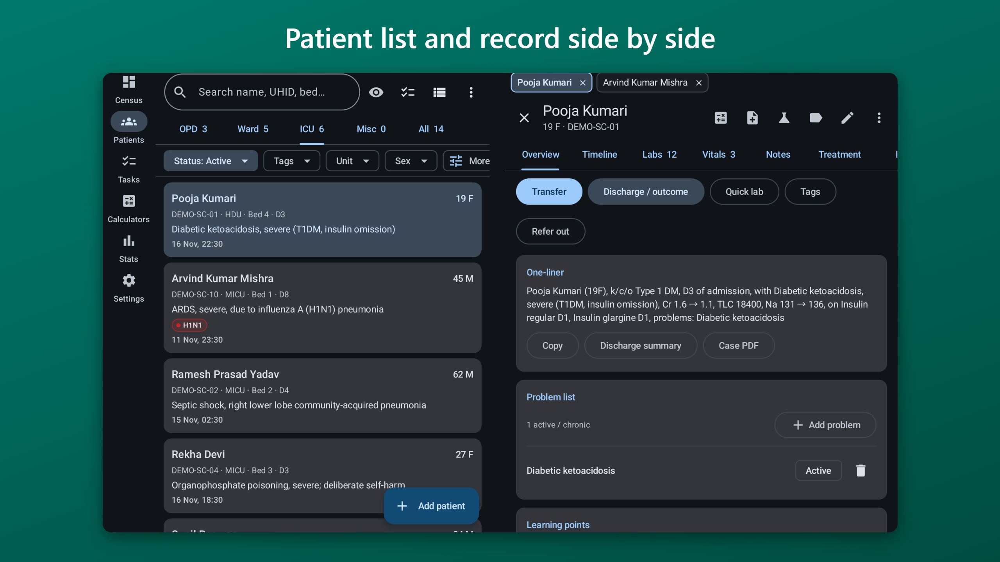
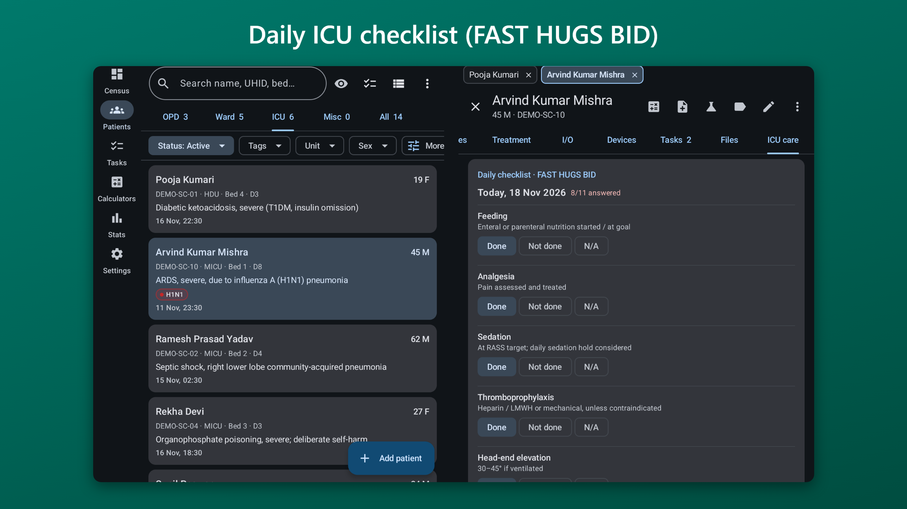
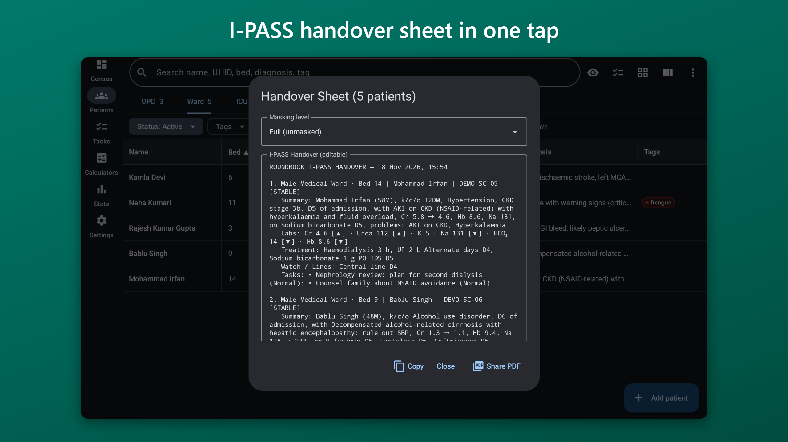
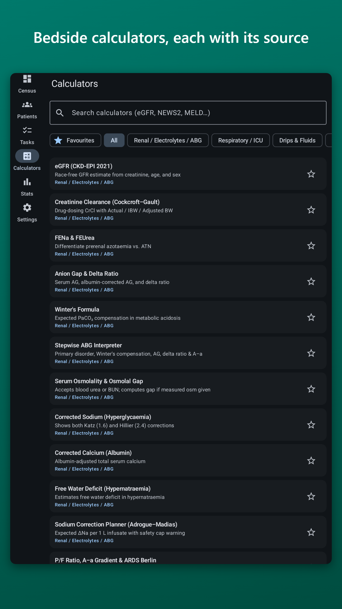

Your ward round, in your pocket.
RoundBook keeps your patient list, labs, notes, tasks and handovers in one place. It works with no internet at all and keeps everything encrypted on your own phone or tablet.
Free. In closed testing. Android 9 or newer. Built by a resident, for residents.
- No internet permission
- Encrypted on device
- No account, no ads, no tracking
- Phone and tablet
What it does
Census and rounds
OPD, ward and ICU patients at a glance, with a dashboard you arrange yourself: admissions, trends, who needs attention, tasks due.
Labs, vitals, notes
Lab flowsheets and trends, vitals with NEWS2, intake/output, daily notes, treatment with antibiotic days, problem lists.
Scan instead of typing
Scan an OPD card, lab report or round note; text is read on the device. Optional: send a photo to an AI app you choose, only after you confirm.
ICU
Daily checklists (FAST HUGS BID or your own), breathing trials with RSBI, ventilator and ABG chart, line days, code timer.
Documents
Handover sheets, discharge summaries, case presentations and referral letters, masked to the level you choose before sharing.
67 calculators
eGFR, NEWS2, MELD-Na, CURB-65, CHA₂DS₂-VASc, infusion rates and more, each with its formula and source.
Screenshots




Screenshots use made-up demo patients.
Download and install
- Open the latest release on your Android phone and tap RoundBook-x.y.z.apk under Assets.
- Open the downloaded file. If Android asks, allow installing from your browser or Files app.
- Open RoundBook, read and accept the terms, and turn on the app lock and automatic backup when it suggests them.
Getting updates
Installing a newer APK over the old one keeps all your patients. Two ways to stay up to date:
Check by hand
Come back to the latest release and install the new APK over the old one.
Automatic notices with Obtainium
Install the free Obtainium app, tap Add app, and paste https://github.com/rkogenesis/roundbook-app. It tells you when a new version is out.
Privacy in one paragraph
RoundBook has no servers, no account and no analytics, and Android's internet permission is not in the app, so it cannot send anything anywhere by itself. Everything is stored encrypted on your device. Data leaves only when you export, back up or share it yourself. Read the full privacy policy and terms of use.
RoundBook is decision support and personal record keeping for qualified healthcare professionals and trainees (18+). It is not a medical device or a hospital record.